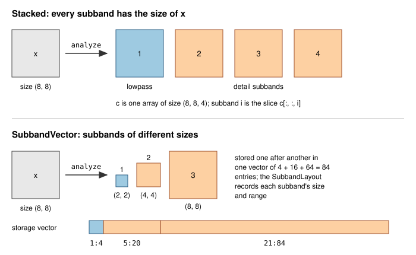

Concepts
This page explains the objects of the AbstractMultiscaleTransforms interface and the properties all implementations share. The functions themselves are documented in the API reference.
Multiscale transforms
A multiscale transform maps an array x to coefficients grouped into subbands. The lowpass subband holds the coarse content of x; each detail subband holds the content of one scale and, for directional transforms such as contourlets, surfacelets and shearlets, of one direction. Analysis (analyze) computes the coefficients; synthesis (synthesize) computes the data back from them.
Transforms, workspaces and coefficients
The interface separates three kinds of object:
- The transform holds the parameters of the decomposition: the number of scales, the directions per scale, the filters. It holds nothing that depends on the data's size or element type, so one transform serves arrays of any size it accepts. Transforms are immutable values: two with equal parameters are
==and have equalhash. - The workspace holds what a transform computes in advance for one data size, element type and array type: filter responses, FFT plans, scratch buffers. Repeated calls with the same workspace skip that work. Because it holds scratch buffers, a workspace serves one call at a time. A transform that precomputes nothing still has a workspace, which records the transform, element type and size, so every transform accepts the same calls.
- The coefficients are an array, so that generic code, such as an iterative solver, can broadcast over them and apply
norm,dotand the in-placeLinearAlgebraupdates without knowing the transform.
How coefficients are stored
Subband 1 is always the lowpass; subband_layout describes the others in order. Transforms store their subbands in one of two ways:

- Stacked. When every subband has the size of
x, as in nonsubsampled and translation-invariant transforms, the coefficients are one array of size(size(x)..., n)and subbandiis its sliceialong the last axis. SubbandVector. When subbands have different sizes, as in decimated transforms, they are stored one after another in a single vector. ASubbandLayoutrecords each subband's size and range in that vector, and the size of the data. Arithmetic, broadcasting and theLinearAlgebraoperations run on the storage vector as a whole, so they work on GPU arrays without indexing single elements.
In both cases subband returns a view of one subband with its own shape, and writing to the view changes the coefficients.
Synthesis, inverse and adjoint
synthesize(t, analyze(t, x)) ≈ x holds for every transform: synthesis inverts analysis. Synthesis is also the adjoint of analysis only when the transform is a Parseval frame (a tight frame with bound 1), that is, when analysis preserves the norm: norm(analyze(t, x)) ≈ norm(x). For other transforms, the adjoint differs from synthesize. Each transform package states which of its transforms are Parseval frames.
Redundant transforms have more coefficients than data: length(c) / length(x) is the redundancy. Stacked transforms with n subbands have redundancy n.
Complex data
The filters of the implementing packages are real. Complex data is transformed as its real and imaginary parts, so every transform is real-linear: analyze(t, x + im * y) ≈ analyze(t, x) + im * analyze(t, y) for real x and y. The conformance tests in AbstractMultiscaleTransforms.Testing check this for every implementation.
Threads
Results do not depend on the threaded keyword beyond rounding.